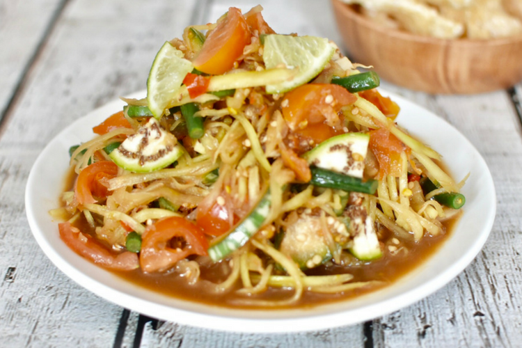

Papaya Salad

Laos Style Papaya Salad
Papaya Salad is a Southeast Asian dish, but it is stylized differently
depending on where you're from. The recipe that
will be showcased is a Laos style Papaya Salad.
It is sweet, sour, salty and spicy.
Ingredients
- 4 cups shredded unripe papaya
- 4 Thai chili (or modified to taste)
- 1 clove garlic
- 1/4 tsp crab paste (optional)
- 1/2 tsp shrimp paste
- 2 tbsp fish sauce
- 1 tbsp padaek (optional)
- 2 tbsp sugar
- 8 cherry tomatoes halved
- 1 cup long bean chopped in 1 inch increments
- 2 cup Thai eggplants sliced
Steps
- Using a mortar and pestle, pound the chili, garlic, crab and shrimp paste.
- Add the cherry tomatoes, sugar, fish sauce, padaek, sugar and lime juice. Pound the cherry tomatoes to create the sauce
- Add the shredded papaya, long bean and thai eggplant.
- Pound until the ingredients are mixed well.
- Serve as a snack with chicharon (crispy pork rinds), cabbage or ong choy.
Homepage